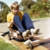
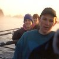
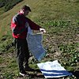

I was born and raised in Sydney, Australia.
I studied mechanical engineering at the University of Sydney. After a short stint with Andersen Consulting in Sydney, I moved to the University of Cambridge in 1996. I worked under David Cebon the Department of Engineering on using active suspension systems to improve the stability and safety of commercial road vehicles. I graduated with the degree of Ph.D. in 2001.

On completion of my studies, I joined the consulting group at MathWorks, also in Cambridge. I had worked with the company's products, MATLAB and Simulink, throughout my studies, and was keen to apply myself to projects in the automotive and aerospace industries. I am heavily involved in using statistical and optimisation methods to reduce development time, increase efficiency and reduce emissions of engines of all shapes and sizes. I also work on projects involving the modelling and control of mechanical systems, for example, automotive powertrains, aircraft landing gear, and wind turbines.
I live in the village of Impington, just north of Cambridge.

Within days of arriving in Cambridge, I was introduced to the sport of rowing. I developed into a competent oarsman and I was a regular member of the Churchill College First VIII in the late 1990s. After graduation, I continued rowing for Cambridge '99 Rowing Club for several years. Now retired from competition, I keep fit by cycling. I have remained involved in rowing as a coach for Churchill College.
Like many Australians, I enjoy following professional sports. Cricket, motor racing and tennis were among the staples in my youth. A more recent and European interest is biathlon.
I am reasonably well travelled and my favourite region is the Alps. My wife Angie and I have enjoyed many hiking trips in France and Switzerland.